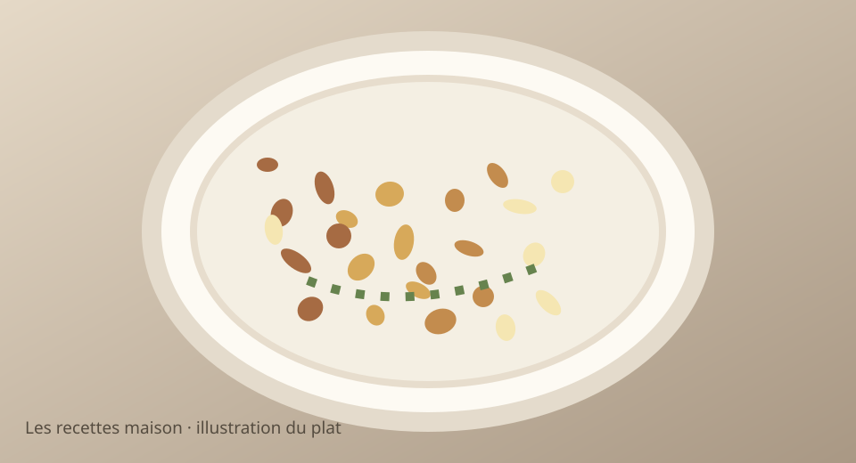

Jeudi 19 novembre 2026 · Menu validé
Boulettes de bœuf et pommes de terre rissolées

Illustration stylisée, non photographie.
Version ados
Petites portions, ingrédients séparés, sans épices, tomates, carottes ni légumes verts. Pommes de terre et riz nature acceptés.
Version parents
Même base, agrémentée des légumes, sauce et assaisonnements indiqués dans les étapes.
Ingrédients
- 450 g de bœuf haché
- 750 g de pommes de terre
- 250 g de carottes (parents)
- 1 oignon (parents)
- 30 g de chapelure
- 1 c. à soupe de moutarde (parents)
- 60 ml de crème légère (parents)
- 1 c. à soupe d’huile d’olive
- Sel et poivre (poivre uniquement pour les parents)
Préparation simultanée, pas à pas
- Laver et couper les pommes de terre en petits cubes. Les précuire 8 min à l’eau, égoutter puis faire rissoler 12 à 15 min avec l’huile.
- Mélanger le bœuf haché avec la chapelure et un peu de sel. Former de petites boulettes simples sans épices ni légumes incorporés.
- Faire cuire les boulettes à la poêle jusqu’à cuisson complète (viser 71 °C à cœur pour le bœuf haché). Réserver les portions des ados avec les pommes de terre nature.
- Pendant ce temps, faire fondre l’oignon émincé et les carottes en fines rondelles dans une petite casserole avec un fond d’eau, environ 15 min.
- Ajouter la moutarde et la crème dans la poêle des parents avec un peu d’eau, réchauffer la sauce et servir avec les boulettes, les carottes et les pommes de terre.
Prix et calories estimés, non vérifiés en magasin. Ajuster les quantités à l’appétit.